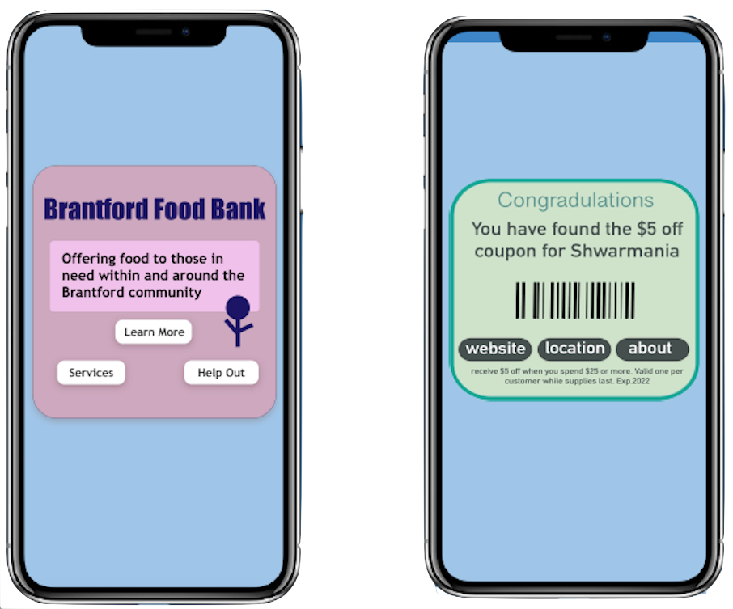

Software
Tinkercad.
Adobe Illustrator.
Adobe InDesign.
Problem and Users
Businesses are have difficulty connecting with the local communit of downtown Brantford.
Brantford citizens: How can I find the right business for my needs?
Brantford businesses: How can we reach the community more effectively?
Our Question:
How might we utilize accessible and multisensorial technology to engage the Brantford community with local businesses?
Proposed Solution
Final Prototypes
Our group worked to create accurate visuals of our vision for this project.
Below you can see the 3D QR code prototype which would be mounted on the business wall (outside, inside, or both). This is our high-budget option. As you can see, we made some improvements from SDP1 and thought of more details if this were to ever go into production.
The 3D piece is stuck to a back panel which has four holes that the screws would fit into so that it can be easily and securely mounted to a wall. In addition, we have added a glass panel which protects the digital screen against any damage or vandalism.
The motion sensor you see above the digital QR code screen will detect any movement which will turn the screen on and create a *ding* sound to attract people to it. The sensor also pokes out of the glass to allow for more effective detection.
To the left, you can see the prototype without the glass layer, and to the right you can see it with the glass layer.
Below you can see the 3D QR code prototype which would be mounted to the business wall (outside, inside, or both). This is our low-budget option. This option does not include the motion sensor or the digital screen, but it includes a vinyl sticker which is stuck on to the 3D box. Vinyl stickers are known to be quite resistant against any weather such as rain and snow, and most vandalism will be easy to wipe off.
To the left, you can see the prototype without the glass layer, and to the right you can see it with the glass layer.
Below you can see the instruction manual that would come with both the high-budget option and the low-budget option. Whether the business decides to go with the high-budget version or the low-budget version, each package would include the same pieces, including the glass protection layer. The main difference is the 3D piece; the high-budget option would include the 3D piece with the sensor and digital screen, whereas the low-budget option would include the 3D piece with the vinyl sticker.

Below you can see that the coupon QR code stickers hidden around the city will remain the same as from SDP1. These will be vinyl stickers.
We added another example of a coupon which would be in the category of volunteering or charity. This example would be linked to the Brantford Foodbank. The user who scans the code would br brought to a menu where they could choose to volunteer by clicking "Help Out" or click "Services" if they need help. Scroll down to see how that pop-up would look like.

Below you can see examples of the pop-ups and pages that the coupon QR codes above would lead the user.
HOW is our design a haptic tool?
✔️ Sight
✔️ Hearing
✔️ Touch
✔️ Motion